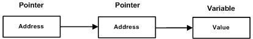

Pointers
A pointer is a variable whose value is the address of another variable, i.e., direct address of the memory location. Like any variable or constant, you must declare a pointer before you can use it to store any variable address. The general form of a pointer variable declaration is:
type *var-name;
Here, type is the pointer's base type; it must be a valid C data type and var-name is the name of the pointer variable. The asterisk * you used to declare a pointer is the same asterisk that you use for multiplication. However, in this statement the asterisk is being used to designate a variable as a pointer. Following are the valid pointer declaration:
int *ip; double *dp; float *fp; char *ch;
The actual data type of the value of all pointers, whether integer, float, character, or otherwise, is the same, a long hexadecimal number that represents a memory address. The only difference between pointers of different data types is the data type of the variable or constant that the pointer points to.
There are few important operations, which we will do with the help of pointers very frequently. (a) we define a pointer variable (b) assign the address of a variable to a pointer and (c) finally access the value at the address available in the pointer variable. This is done by using unary operator * that returns the value of the variable located at the address specified by its operand. Following example makes use of these operations:
#include <stdio.h>
int main ()
{
int var = 20; /* actual variable declaration */
int *ip; /* pointer variable declaration */
ip = &var; /* store address of var in pointer variable*/
printf("Address of var variable: %x\n", &var);
/* address stored in pointer variable */
printf("Address stored in ip variable: %x\n", ip );
/* access the value using the pointer */
printf("Value of *ip variable: %d\n", *ip );
return 0;
}
OutPut:
Address of var variable: bffd8b3c
Address stored in ip variable: bffd8b3c
Value of *ip variable: 20
It is always a good practice to assign a NULL value to a pointer variable in case you do not have exact address to be assigned. This is done at the time of variable declaration. A pointer that is assigned NULL is called a null pointer.
The NULL pointer is a constant with a value of zero defined in several standard libraries. Consider the following program:
#include <stdio.h>
int main ()
{
int *ptr = NULL;
printf("The value of ptr is : %x\n", &ptr);
return 0;
}
As explained in main chapter, C pointer is an address, which is a numeric value. Therefore, you can perform arithmetic operations on a pointer just as you can a numeric value. There are four arithmetic operators that can be used on pointers: ++, --, +, and -
Before we understand the concept of arrays of pointers, let us consider the following example, which makes use of an array of 3 integers:
#include <stdio.h>
const int MAX = 3;
int main ()
{
int var[] = {10, 100, 200};
int i;
for (i = 0; i < MAX; i++)
{
printf("Value of var[%d] = %d\n", i, var[i] );
}
return 0;
}
Value of var[0] = 10
Value of var[1] = 100
Value of var[2] = 200
A pointer to a pointer is a form of multiple indirection, or a chain of pointers. Normally, a pointer contains the address of a variable. When we define a pointer to a pointer, the first pointer contains the address of the second pointer, which points to the location that contains the actual value as shown below.
When a target value is indirectly pointed to by a pointer to a pointer, accessing that value requires that the asterisk operator be applied twice, as is shown below in the example:
#include <stdio.h>
int main ()
{
int var;
int *ptr;
int **pptr;
var = 3000;
/* take the address of var */
ptr = &var;
/* take the address of ptr using address of operator & */
pptr = &ptr;
/* take the value using pptr */
printf("Value of var = %d\n", var );
printf("Value available at *ptr = %d\n", *ptr );
printf("Value available at **pptr = %d\n", **pptr);
return 0;
}
When the above code is compiled and executed, it produces the following result:
Value of var = 3000
Value available at *ptr = 3000
Value available at **pptr = 300
C programming language allows you to pass a pointer to a function. To do so, simply declare the function parameter as a pointer type.
void getSeconds(unsigned long *par); /*Delclaration*/
getSeconds( &sec ); /*Calling*/
void getSeconds(unsigned long *par)
{
/* get the current number of seconds */
*par = time( NULL );
return;
}
As we have seen in last chapter how C programming language allows to return an array from a function, similar way C allows you to return a pointer from a function.